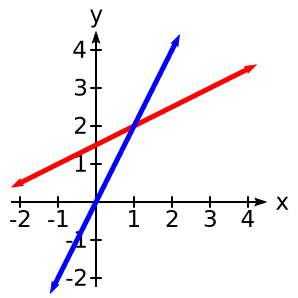
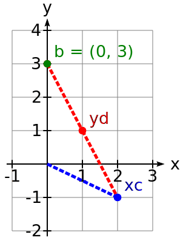

The geometry of linear equations
The fundamental problem of linear algebra is to solve \(n\) linear equations in \(n\) unknowns.
For example:
\[
\mysys{2x-y&=0\\-x+2y&=3}
\]
In this first lecture on linear algebra we view this problem in three ways.
The system above is two dimensional (\(n=2\)).
By adding a third variable \(z\) we could expand it to three dimensions.
Row Picture
Plot the points that satisfy each equation. The intersection of the plots (if they do intersect) represents the solution to the system of equations.
Looking at Figure 1 we see that the solution to this system of equations is \(x=1, y=2\).

Figure 1.
The lines
\(2x-y=0\) and
\(-x+2y=3\)
intersect at the point (1,2).
We plug this solution in to the original system of equations to check our work: \[\mysys{2*2-2&=0\\-1+2*2&=3}\]
The solution to a three dimensional system of equations is the common point of the intersection of three planes (if there is one).
Column picture
In the column picture we rewrite the system of linear equations as a single equation by turning the coefficients in the columns of the system into vectors: \[ x\mymat{2\\-1} + y\mymat{-1\\2} = \mymat{0\\3} \] Given two vectors \(c\) and \(d\) and scalars \(x\) and \(y\), the sum \(xc + yd\) is called a linear combination of c and d. Linear combinations are important throughout this course.
Geometrically, we want to find numbers x and y so that x copies of vector \(\mymat{2\\-1}\) added to y copies of vector \(\mymat{-1\\2}\) equals the vector \(\mymat{0\\3}\). As we can see from Figure 2, \(x=1\) and \(y=2\), which agrees with the row picture in Figure 1.

Figure 2. A linear combination of the column vectors equals the vector \(b\).
Matrix Picture (aka, Matrix Form)
We write the system of equations:
\[\mysys{2x-y&=0\\-x+2y&=3}\]
as a single equation by using matrices and vectors:
\[
\mymat{2&-1\\-1&2}\mymat{x\\y}=\mymat{0\\3}
\]
The matrix \(A = \mymat{2&-1\\-1&2}\) is called the
coefficient matrix.
The vector \(x\) = \(\mymat{x\\y}\) is the vector of unknowns.